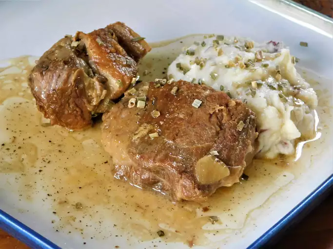

Pork Shoulder Recipe

Ingredients
- 1 (3 pound> pork shoulder roast
- Kosher salt
- 1 table spoon Vegetable Oil
- 1 large onion
- cayenne pepper
Directions
- Salt the pork shoulder
- Transfer pork shoulder pieces to cider mixture
- Raise heat to high and bring sauce to a simmer